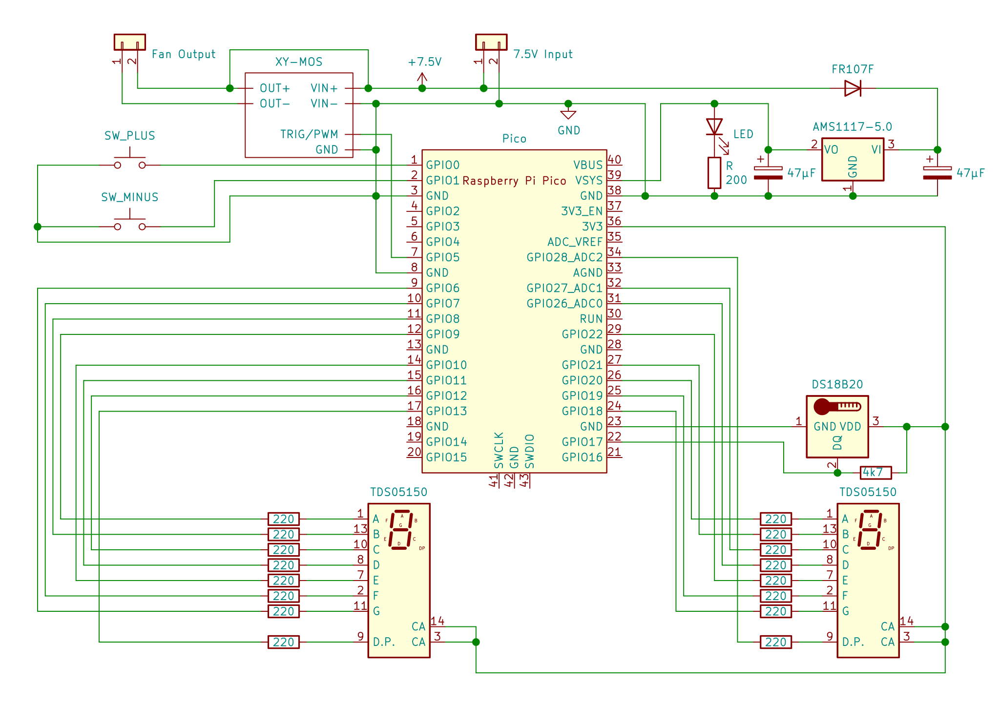

Simple Temperature Controller
This is a simple project to control some outputs by the value of a temperature sensor with MircoPython on a Raspberry Pi Pico. In normal operation the actual temperature of the temperature sensor is shown on the two 7-segment displays. Additionally, the current state (e.g. currently cooling or not) is shown using three LEDs. The threshold value for the desired temperature can be set with two push buttons.
The python code is used for controlling a refrigerator as well as a simple aquarium cooler and you can find the code for both on the GitHub repository.
See project on GitHub
| Refrigerator Controller |
| Aquarium Cooler |
Refrigerator Controller
I used this project to control an old refrigerator which did not properly cool anymore. However, the refigerator had a manual button for activating the cooling which still worked. So I simply interfaced this button and put a temperature sensor inside the fridge. For interfacing the button I had to use some MOSFET modules because I did not have other components available.
Schematic
Images
| Old fridge wired to the controller on top |
| Open case of the controller with both stripboards |
Aquarium Cooler
This is basically a simple fan controller that works by temperature sensor readings. Since the sensor can operate under water it is possible to measure the actual water temperature and turn on a fan if necessary. In fish tanks high temperatures lead to low amounts of dissolved oxygen in the water. By lowering the temperature and increasing the gas exchange the problem can be solved. The water is cooled by turning on the fan because of the evaporation effect from the increased airflow.
For the hardware I used three stripboards and stacked them:
- Top: MOS module, buttons, displays and the resistors for the displays
- Middle: LDO circuit and wiring
- Bottom: Raspberry Pi Pico, sensor and USB connector
Schematic

Images
| Hardware inside a small 65x45x25 mm case |